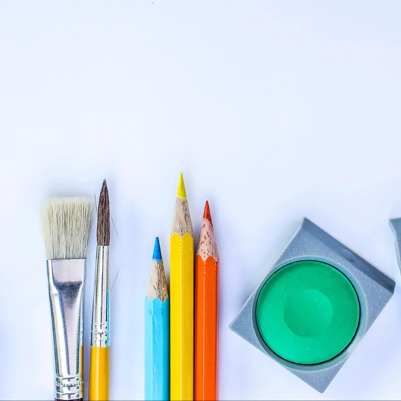

Autorretrato
El desarrollo de una imagen positiva de sí mismos es fundamental en el proceso de evolución de los niños y niñas.
Materiales: Hojas blancas, lápices de colores, elementos reciclados tales como botones, trozos de papel, fósforos, etc.
Indícale que vamos a dibujar el rostro en la hoja y dependiendo de su edad, será si ayudas a dibujar quizás el contorno de la cabeza para que luego él o ella continúe o más bien puedes acompañar haciendo tu propio auto-retrato.
Te sugiero que entregues la consigna importante que se dibuje como se sienta en ese momento. Mientra lo confecciona, realiza pregúntale tales como: ¿ Tiene el pelo liso o crespo?, ¿Cómo son tus ojos?, ¿Qué es lo que más te gusta de tu rostro?.
Idealmente realizar esta actividad con todos los integrantes de la familia, ya que de esta manera se obtendrán diversos autorretratos y así podrán preparar una exposición de ellos para ser visualizados.
Espejo mágico
A los niños/as les encanta mirarse al espejo y si pueden mezclarlo con pintura, les encanta aún más.
Materiales: Tempera, pinceles, agua, paño, fuente plástica.
Todos tenemos en casa un espejo, te aconsejo idealmente hacer esta actividad en el más grande que tengas en casa, por ejemplo, en el baño.
La idea es situarse frente a este, teniendo a manos los materiales señalados. La primera acción es mirarse atentamente en el espejo y observar todos los detalles de nuestro rostro. Luego de esto, jueguen a observar como se pone el rostro cuando sienten pena, cuando están felices, con miedo, sorprendidos, etc.
Después de esto, la idea es que con la pintura puedan reproducir estas expresiones en el espejo reconociendo en cada uno de ellos, la emoción.
Títeres reciclados
Les encantan y los disfrutan al máximo y si pueden aprender a confeccionarlos será mucho más significativo.
Materiales: Pegamento (Idealmente colafria o silicona), botones viejos, calcetines impares, papeles reciclados, fósforos ya utilizados, restos de lana, etc.
Todos tenemos en casa algún calcetín viejo y que se puede transformar en un hermoso títere. Piense en cómo les gustaría que fuese su personaje para así tomar decisiones en torno a la forma de sus ojos, el pelo, la boca, etc.
Los ojos pueden confeccionarlos con restos de papel o bien con botones que tengas por ahí, el pelo puede ser con lana, hilo y/o cinta, la boca con palos de fósforos y el resto según sus imaginaciones!
Que les vaya increíble!!!!!